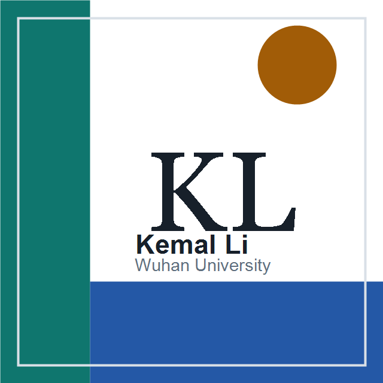
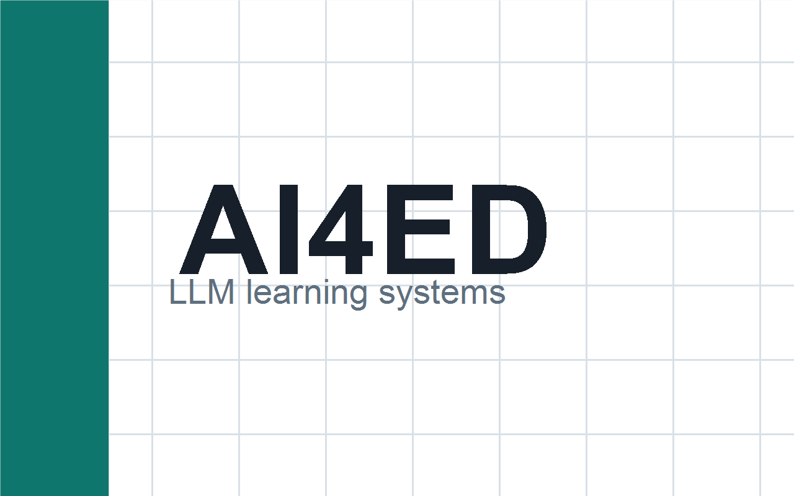
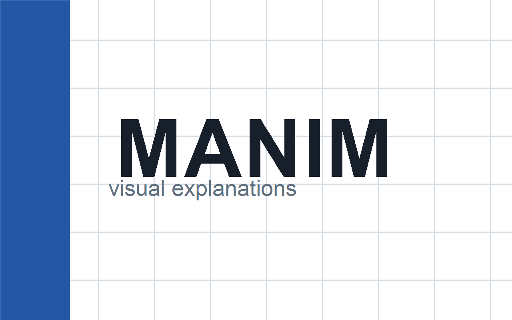
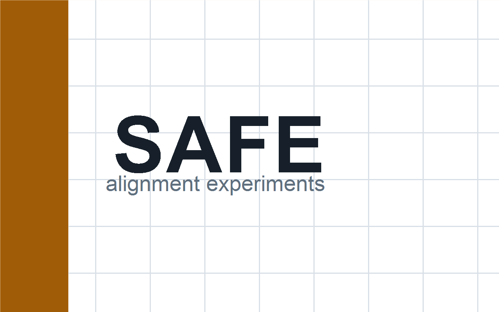

Undergraduate Research, Wuhan University
Research and project work across language models, educational AI, multimodal systems, and agentic tools.
Undergraduate Student, School of Computer Science
Wuhan University
I am an undergraduate student in Computer Science at Wuhan University. My research interests include large language models, AI for education, AI safety, multimodal learning, and agentic systems.

I am interested in building AI systems that are useful for learning, reasoning, and creative work, while remaining robust, interpretable, and aligned with human intent. My current work focuses on LLM-based educational tools, multimodal interfaces, and agentic workflows.
Public papers, preprints, and technical reports will be listed here once they are publicly available.

Exploring how large language models can support personalized learning, tutoring workflows, and better feedback loops for students.

Creating concise, visual explanations for technical concepts with animation-first teaching materials.

Studying experimental setups for improving model resistance to harmful or misaligned behavior.
Research and project work across language models, educational AI, multimodal systems, and agentic tools.
Leading project design and experiments for AI-assisted learning workflows and educational content generation.
Selected awards, scholarships, research programs, and competition results can be added here.
I am open to research collaboration and internship opportunities in LLMs, AI for education, AI safety, multimodal learning, and agentic systems.
Email: 2024302111194@whu.edu.cn